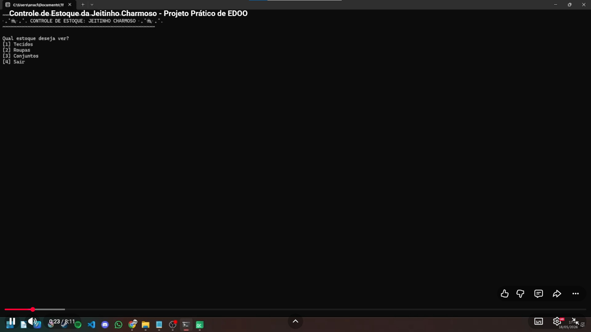

Sobre o Projeto
O projeto foi desenvolvido para auxiliar o controle de estoque de uma loja de roupas infantis, permitindo o gerenciamento de peças, conjuntos e tecidos. A aplicação foi criada como trabalho acadêmico da disciplina de Estrutura de Dados Orientada a Objetos no Centro de Informática da UFPE.
Principais Funcionalidades
Cadastro de roupas
Permite registrar peças de roupa com suas informações principais.
Controle de tecidos
Gerencia tecidos comprados e utilizados na produção das roupas.
Conjuntos
Organiza roupas em conjuntos e relaciona peças entre si.
Persistência de dados
Utiliza banco SQLite para armazenar as informações do sistema.
Arquitetura
O sistema segue uma organização baseada em Model-View, separando interface, regras de negócio e acesso ao banco de dados.
View
Telas e interação com o usuário.
Model
Classes que representam as entidades do sistema.
DAO
Camada responsável pelo acesso ao banco de dados.
Demonstração
Algumas telas do sistema em funcionamento.



Vídeo de Apresentação
Tecnologias Utilizadas
- C++
- Qt Creator
- QMake
- SQLite
- GitHub Pages
Equipe
Desenvolvido por:
Alany Vitória Borba de Siqueira - avbs2@cin.ufpe.br
Ana Clara de Oliveira Cavalcante - acoc@cin.ufpe.br
Eduardo Santos Neves Rocha - esnr@cin.ufpe.br
Pedro Henrique Cabral Galdino dos Santos - phcgs@cin.ufpe.br
Valquíria Eugênia Silva - ves@cin.ufpe.br